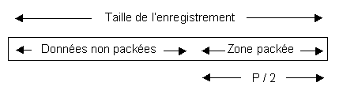
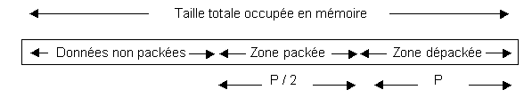

Harmony permet de comprimer les champs numériques des tables pour gagner de l'espace disque.
Les champs comprimés occupent moitié moins de place que les champs correspondants non comprimés.
Les champs comprimés d'une table sont tous regroupés dans une zone contiguë, appelée "zone packée" et située généralement en fin de table. On ne peut définir qu'une zone packée par table.
|
Seuls les champs de type Numérique, Numérique,d, Date, Durée et Heures peuvent être packés. |
Les champs packés s'emploient de la même manière que les champs classiques (le package et le dépackage sont automatiques). Pour plus de détails, voir la rubrique "Record" du livre de la documentation Xwin - Programmation consacré au langage Diva.
Structure d’une table ayant une zone packée
Schéma d'un enregistrement stocké sur disque
Lorsqu'un programme Diva lit cet enregistrement, il décondense automatiquement la zone packée. Les champs dépackés sont regroupés dans une zone contiguë, appelée zone dépackée et située en mémoire à la suite de l'enregistrement.

Schéma de l'enregistrement stocké en mémoire

La taille totale occupée en mémoire est donc égale à la taille de l'enregistrement disque plus deux fois la taille de la zone packée. C'est la raison pour laquelle le champ "Taille en mémoire" de l'objet "Table" doit être saisi au moins égal à la longueur déclarée de la table plus deux fois la longueur de la zone packée.
Création des champs packés
Pour mettre des champs packés dans une table,
vous devez tout d'abord créer une zone packée (clic droit puis Créer zone packée),
puis insérez les champs comme des sous-champs du champ PACK.